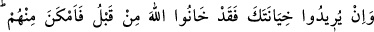
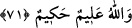

71. Eğer sana hâinlik etmek isterlerse, daha önce Allah’a da hâinlik etmişlerdi.
Bu yüzden (Allah) onlara karşı (sana) imkan verdi. Allah her şeyi bilendir, yerli
yerince yapandır.
“Eğer” o esirler “sana hâinlik etmek isterlerse,” yani önce sana müslüman
olduklarına dair söz verir, sonra da atalarının dînine geri dönerlerse, zaten onlar “daha
önce Allah’a da hâinlik etmişlerdi.” Elest bezminde verdikleri sözden dönmüşler ve
Rablerini inkar ederek hiyanetlerini ortaya koymuşlardı. “Bu yüzden” Allah “onlara
karşı” sana “imkan verdi.” Bedir savaşında yaptığı gibi seni onlara muktedir kıldı.
Eğer yeniden hiyânete yeltenecek olurlarsa, Allah onlara karşı sana yine güç ve kudret
bahşedecektir.
“Allah her şeyi bilendir” Alîm’dir; onların niyetlerinin ne olduğunu ve hak ettikleri
cezayı bilir.
Onun için ilmin bir zerresi bile gizli değildir
Âşikar olan da gizli olan da onun katında birdir
“yerli yerince yapandır.” Hakîm’dir; yaptığı her şey yüce hikmetinin gereğidir.
Bazı rivayetlere göre Abbas b. Abdulmuttalib, Bedir savaşından önce müslüman
olmuştu. Fakat Kureyş’te alacağı borçları olduğu için alamam korkusuyla
müslümanlığını açığa vurmamıştı. Hz. Peygamber (a.s.) da onu fidye ile mükellef tuttu.
Zâhiren bu onun lehine değil aleyhine bir hükümdü. Mekke fethi günü ehl-i İslâm, ehl-i
küfre galebe çalınca Abbas müslümanlığını açığa vurdu. Fakat Nebî (a.s.) Kureyş’teki
alacakları zâyi olmasın diye merhameten onun müslümanlığını halka ilan etmedi. Hatta
daha önce Abbas (r.a.) hicret etmek için Hz. Peygamber (a.s.)’dan izin istediğinde ona
bir mektup göndererek: “Ey amca, yerinde kal. Yüce Allah benimle nübüvveti sona
erdirdiği gibi seninle de hicreti sona erdirecektir.” diye haber gönderdi. Gerçekten de
öyle oldu.[74]
Bu âyette Allah Teâlâ’nın kudreti beyan edilmektedir. Dünyada ve ahirette onun
kahrından kurtulmak isteyen kimse, ancak îman ve ihlâs ile buna yol bulabilir. O Allah
her şeye gücü ve kudreti yeten (el-Kâdir, el-Kavî) ve her şeyi yaratan (el-Hâlık)dır.
O’nun dışındakiler ise âciz, zayıf ve mahlûktur (yaratılmıştır).
Bir haberde Hz. Peygamber (a.s.) şöyle buyurmuştur: “Allah Teâlâ şöyle buyurdu:
“Güçlü adama de ki: “Gücün ve kuvvetin seni ucbe (kendini beğenme illetine)
düşürmesin. Seni ucbe düşürüyorsa haydi o zaman ölüme karşı gel.” Âlime de de ki:
“İlmin seni ucbe düşürmesin. Ucbe düşürüyorsa o zaman ecelinin ne vakit olduğunu